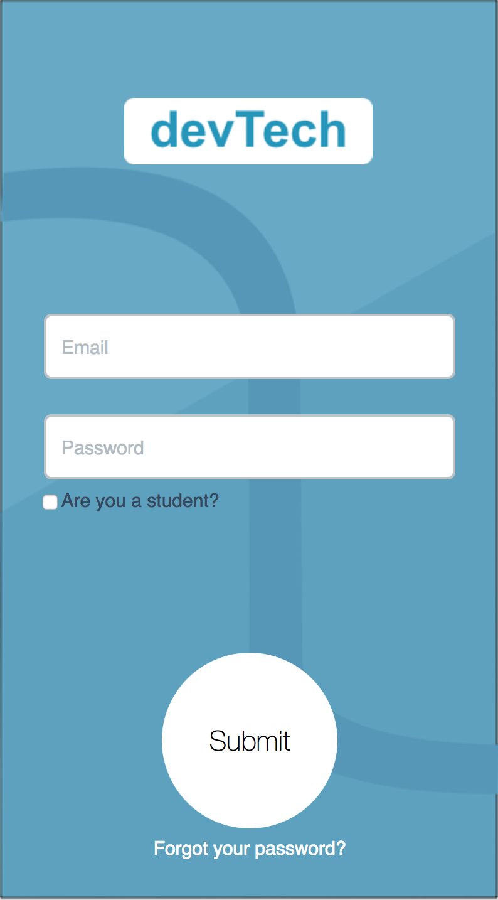
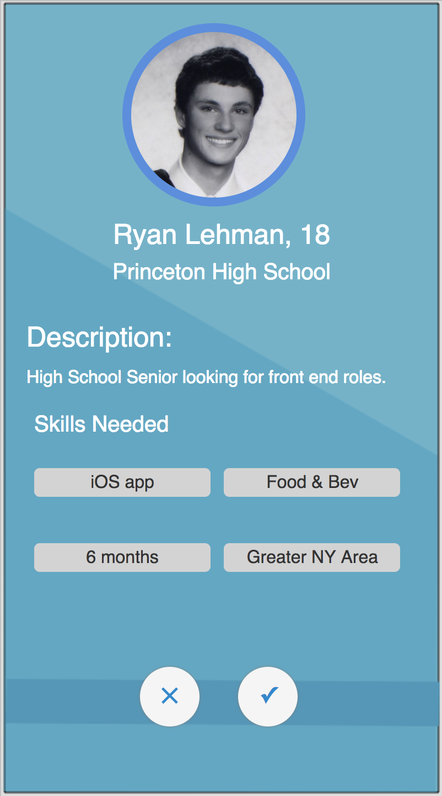
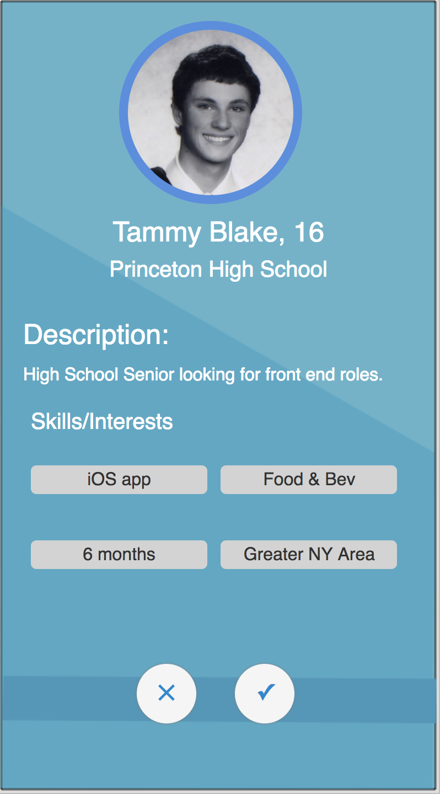
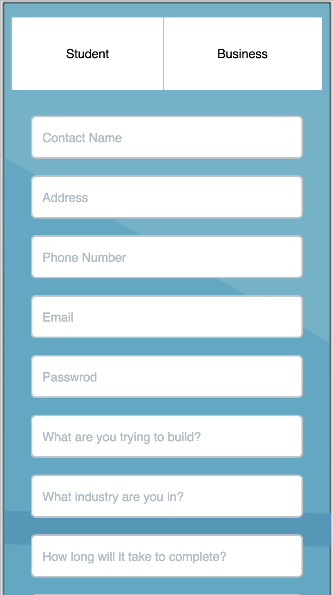
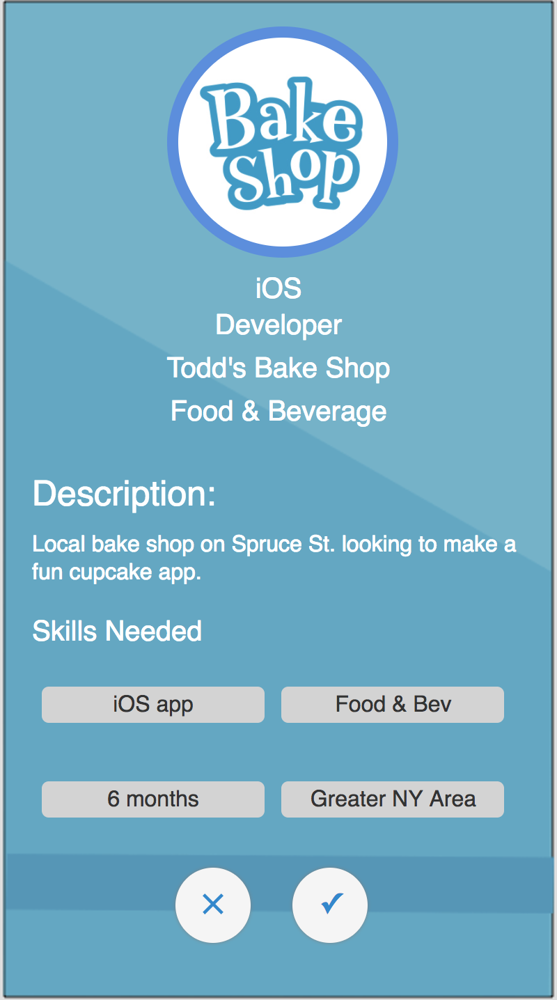

Summary: The idea was connecting high school students who were interested in computer science to take advantage of projects from other ventures. It would work where students could swipe on an iOS application to find projects that small venture companies would post. The small companies would post the criteria they need and also swipe but for programmers who they thought would be interested. Both parties would be swiping so there would be equal opportunity. This web application would allow students to post their skill sets and pass projects while companies would post the jobs needed. The programmers could see the jobs listed and pick the ones they are qualified for. The companies could also go out and find programmers by doing a similar process. Using HTML, CSS, and Javascript this was accomplished. Using objective-C or swift would be where the platform would publicly presented but the route we went accounted for a small time frame which is why we needed lightweight languages. Execution: We first began by mapping out UI designs on sketch. After some discussions we had a basic interface. There would be a login and signup screen depending on which party was using the application. Then we drove straight into making an easy to use interface to get the job done. As the designs were mocked up we began coding at the same time. Since we had a quick and dedicated team we all took tasks and got started. Since I was able to gather the team together and think of the idea, I had a minor position of being the manager of the group. I started coding the front-end but constantly worked on the back-end, along with the design. Our front end consisted of HTML, CSS, and Javascript, while our backend was using LoopBack. We used node.js for loopback while we used a fantastic framework "Angular" for our Javascript. Since we only had so much time, I was able to dedicate every ounce of time to something productive. When a teammate had downtime because they were waiting for someone to implement what they have done, we began doing research on the competitors in the market along with how we plan to go grow in the future. This wasn't my first time doing market research and we would soon be ready for any questions the judges hit us with.  Since our code was mostly written in HTML and CSS, our biggest problem was formatting everything to fit a mobile application. We wanted to really show the program as an application for mobile which is why everything we coded had to fit a certain format. After we were all on the same pace about each format, it was all about getting as many screens done as we could to show the depth of the application. Not only was it great experience in the languages I was coding in, but we were constantly using GIT nonstop. Since we were all working on separate tasks, they constantly had to be integrated with multiple tasks people we doing. I was thankful I knew GIT before but this has really advanced my skills and could confidently use the language in any surroundings now.   I have been to hackathons before and I really enjoy when the entire group presented the final project. I believe it was the entire group who built the product which is why we should all be up there. Each individual had a particular portion to discuss such as acquisitions or market mapping but I was the one to explain the application and the software behind the inner workings. It was a great experience because I believe if you are able to explain your program to an audience then you learn from your speaking.   At the end of the hackathon I was very happy with the product we were able to complete along with the time spent with my team. I was able to make a lot of great contacts and advance my knowledge in some of the programming languages I have worked with. Utilizes: HTML(5), CSS(3), Javascript, GIT, LoopBack, Angular, Node.js Visit Project